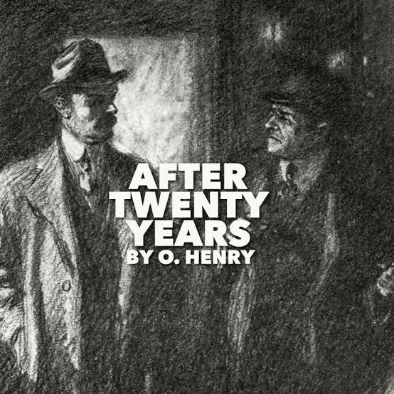

|
 |
|
Bob was a man who had promised his friend Jimmy Wells that they would meet at the same place twenty years later. They had made this promise before going their separate ways.
One night, Bob came to a restaurant area in New York and waited for Jimmy. A police officer approached him and asked what he was doing there. Bob explained that he was waiting for his old friend Jimmy Wells.
Bob told the officer that he and Jimmy had been very close friends when they were young. However, they had chosen different paths in life. Bob had travelled to the West and become successful, while Jimmy had stayed in New York.
After some time, another policeman arrived and began talking to Bob. Bob believed that this man was Jimmy Wells. They walked together for a while.
The policeman then stopped under a bright light and told Bob that he was under arrest.
Bob was shocked. The man explained that he was a police officer and that Bob was wanted for a crime committed in Chicago.
Bob then realized that the first policeman he had spoken to was actually Jimmy Wells.
Jimmy had recognized Bob as the wanted criminal but could not bring himself to arrest his old friend personally. Instead, he sent another police officer to arrest him.
Jimmy's message explained that he had recognized Bob when they met, but he could not make the arrest himself because he was Bob's old friend.